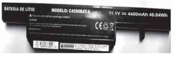
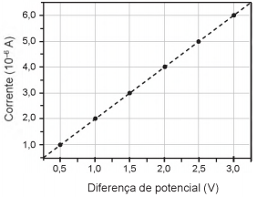
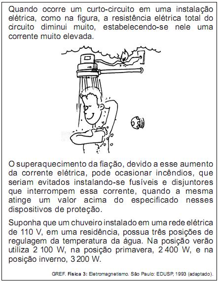

Exercícios
(ENEM 2010) 1- Todo carro possui uma caixa de fusíveis, que são utilizados para proteção dos circuitos elétricos. Os fusíveis são constituídos de um material de baixo ponto de fusão, como o estanho, por exemplo, e se fundem quando percorridos por uma corrente elétrica igual ou maior do que aquela que são capazes de suportar. O quadro a seguir mostra uma série de fusíveis e os valores de corrente por eles suportados.
| Fusível | Corrente Elétrica(A) | Azul | 1,5 |
| Amarelo | 2,5 |
| Laranja | 5,0 |
| Preto | 7,5 |
| Vermelho | 10,0 |
Um farol usa uma lâmpada de gás halogênio de 55 W de potência que opera com 36 V. Os dois faróis são ligados separadamente, com um fusível para cada um, mas, após um mau funcionamento, o motorista passou a conectá-los em paralelo, usando apenas um fusível. Dessa forma, admitindo-se que a fiação suporte a carga dos dois faróis, o menor valor de fusível adequado para proteção desse novo circuito é o:
(A) Azul
(B) Preto
(C) Laranja
(D) Amarelo
(E) Vermelho
Mostrar resposta
Alternativa correta: Letra C
2- Determine a intensidade da corrente elétrica em um fio que tem sua secção reta atravessada por 5.1020 elétrons a cada segundo. Dados: e = 1,6.10-19 C.
(A) 60A
(B) 80A
(C) 30A
(D) 50A
Mostrar resposta
Alternativa correta: Letra B
Explicação:
Vamos utilizar a fórmula da corrente elétrica que leva em conta a quantização da carga elétrica.


3- Determine a intensidade da corrente elétrica que percorre um fio condutor cuja resistência elétrica é igual 0,005 Ω e que está sujeito a uma diferença de potencial de 10V.
(A) 2mA
(B) 2kA
(C) 50mA
(D) 0,50kA
Mostrar resposta
Alternativa correta: Letra B
Explicação:
Para resolver a questão, é necessário usar a 1ª lei de ohm.


4- Determine qual é a potência elétrica dissipada em forma de calor em um fio de resistência elétrica igual a 0,025 Ω, percorrido por uma corrente elétrica de 20,0 A.
(A) 10W
(B) 0,25W
(C) 0,5W
(D) 5,0W
Mostrar resposta
Alternativa correta: Letra A
Explicação:
Para resolver o exercício, devemos fazer o cálculo da potência elétrica dissipada:


5- Os manuais dos fornos micro-ondas desaconselham, sob pena de perda da garantia, que eles sejam ligados em paralelo juntamente a outros aparelhos eletrodomésticos por meio de tomadas múltiplas, popularmente conhecidas como “benjamins” ou “tês”, devido ao alto risco de incêndio e derretimento dessas tomadas, bem como daquelas dos próprios aparelhos.
Os riscos citados são decorrentes da:
(A) Resistividade da conexão, que diminui devido à variação de temperatura do circuito.
(B) Corrente elétrica superior ao máximo que a tomada múltipla pode suportar.
(C) Resistência elétrica elevada na conexão simultânea de aparelhos eletrodomésticos.
(D) Tensão insuficiente para manter todos os aparelhos eletrodomésticos em funcionamento.
(E) Intensidade do campo elétrico elevada, que causa o rompimento da rigidez dielétrica da tomada múltipla.
Mostrar resposta
Alternativa correta: Letra B
6- O choque elétrico é uma sensação provocada pela passagem de corrente elétrica pelo corpo. As consequências de um choque vão desde um simples susto até a morte. A circulação das cargas elétricas depende da resistência do material. Para o corpo humano, essa resistência varia de 1 000 Ω, quando a pele está molhada, até 100 000 Ω, quando a pele está seca. Uma pessoa descalça, lavando sua casa com água, molhou os pés e, acidentalmente, pisou em um fio desencapado, sofrendo uma descarga elétrica em uma tensão de 120 V.
Qual a intensidade máxima de corrente elétrica que passou pelo corpo da pessoa?
(A) 1,2mA
(B) 120mA
(C) 8,3A
(D) 833A
(E) 120kA
Mostrar resposta
Alternativa correta: Letra B
7- A figura mostra a bateria de um computador portátil, a qual necessita de uma corrente elétrica de 2 A para funcionar corretamente.
Quando a bateria está completamente carregada, o tempo máximo, em minuto, que esse notebook pode ser usado antes que ela “descarregue” completamente é:
(A) 24,4
(B) 36,7
(C) 132
(D) 333
(E) 528
Mostrar resposta
Alternativa correta: Letra C
Explicação:
Como Ah é unidade de carga elétrica, pela figura, a quantidade de carga armazenada por hora é igual a Logo, a carga armazenada por minuto vale:
Q = 4400 . 10-3 . 60
Q = 264 Amin
Portanto, o tempo máximo para utilização é de:
∆t = Q/i = 264/2
∆t = 132 min
8- Em algumas residências, cercas eletrificadas são utilizadas com o objetivo de afastar possíveis invasores. Uma cerca eletrificada funciona com uma diferença de potencial elétrico de aproximadamente 10 000 V. Para que não seja letal, a corrente que pode ser transmitida através de uma pessoa não deve ser maior do que 0,01 A. Já resistência elétrica corporal entre as mãos e os pés de uma pessoa é da ordem de 1000 Ω.
Para que a corrente não seja letal a uma pessoa que toca a cerca eletrificada, o gerador de tensão deve possuir uma resistência interna que, em relação à do corpo humano, é:
(A) Praticamente nula.
(B) Aproximadamente igual.
(C) Milhares de vezes maior.
(D) Da ordem de 10 vezes maior.
(E) Da ordem de 10 vezes menor.
Mostrar resposta
Alternativa correta: Letra C
9- Dispositivos eletrônicos que utilizam materiais de baixo custo, como polímeros semicondutores, têm sido desenvolvidos para monitorar a concentração de amônia (gás tóxico e incolor) em granjas avícolas. A polianilina é um polímero semicondutor que tem o valor de sua resistência elétrica nominal quadruplicado quando exposta a altas concentrações de amônia. Na ausência de amônia, a polianilina se comporta como um resistor ôhmico e a sua resposta elétrica é mostrada no gráfico.
O valor da resistência elétrica da polianilina na presença de altas concentrações de amônia, em ohm, é igual a:
(A) 0,5 x 100
(B) 2,0 x 100
(C) 2,5 x 105
(D) 5,0 x 105
(E) 2,0 x 106
Mostrar resposta
Alternativa correta: Letra D
Explicação:
Pela Lei de Ohm:
U = Req x Itotal
Análise gráfica:
Req = 1,0 V / 2,0 × 10-6 = 0,5 × 106 ohms
Porém, de acordo com o enunciado, a polianilina tem o valor de sua resistência elétrica nominal quadruplicada quando exposta a altas concentrações de amônia.
Então, Req = 4 × 0,5 × 106 = 2,0 × 106 ohms
10- (ENEM 2010)
Deseja-se que o chuveiro funcione em qualquer uma das três posições de regulagem de temperatura, sem que haja riscos de incêndio. Qual deve ser o valor mínimo adequado do disjuntor a ser utilizado?
(A) 40A
(B) 30A
(C) 25A
(D) 23A
(E) 20A
Mostrar resposta
Alternativa correta: Letra B